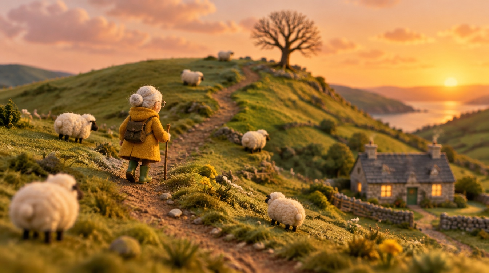
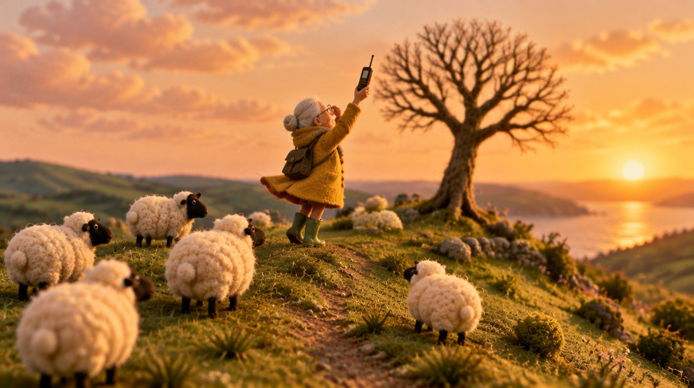
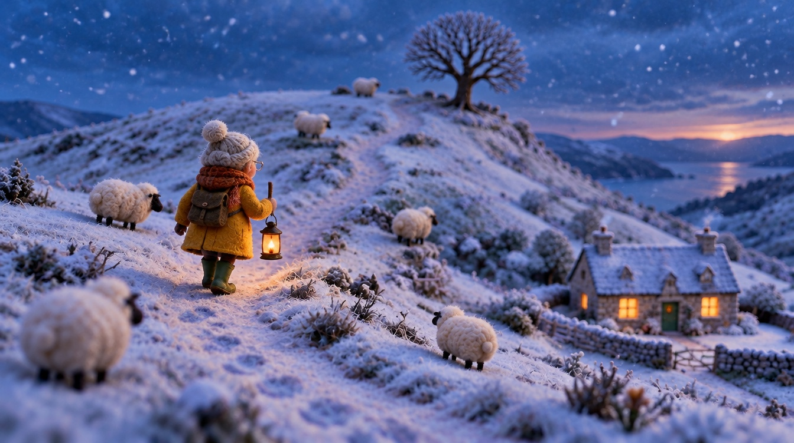
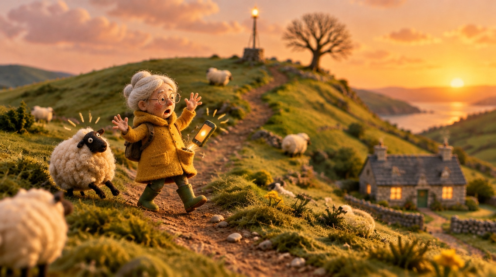
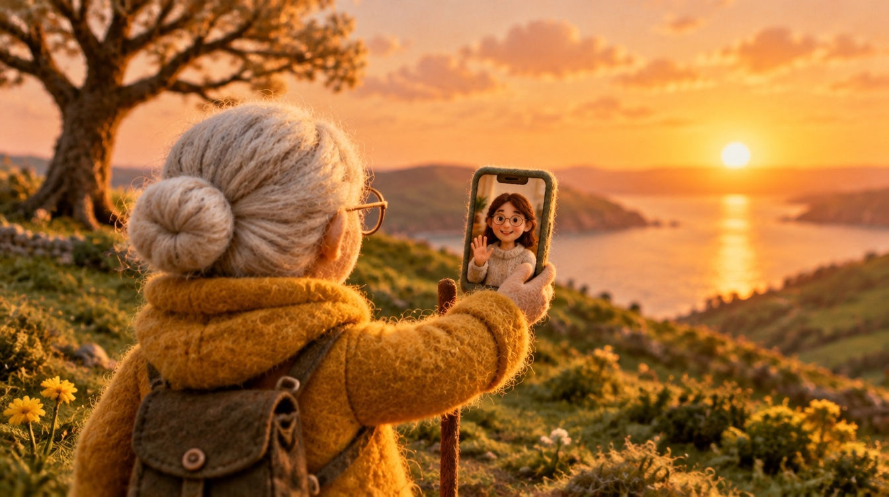

The One Bar
A 60-second spec ad for Porchlight Mobile, a fictional rural mobile network · felt stop-motion look · English voiceover
Download the film (MP4, 1920×1080, 58 s)
Every evening at seven, Mum walked up Carrow Hill. Not for the view, but for the one bar. She climbed it in the rain, in the snow and on her birthday.
Then someone put a little light on the next ridge. The ad has a single benefit: coverage that reaches the end of the road. You can still walk up the hill. You just don't have to.
How it was made: 10 stills generated with GPT Image 2.5 (via Higgsfield), each using the first frame as a character reference so that Mum stays the same puppet in every shot.
Voices are ElevenLabs text-to-speech (via Higgsfield). The camera moves are stepped at 12 fps to read as stop-motion. The fingerpicked score, wind, rain and phone ring are
synthesised in code (no samples or stock music). The edit is ffmpeg. Porchlight Mobile is fictional. This is a spec piece and is not affiliated with any carrier.




